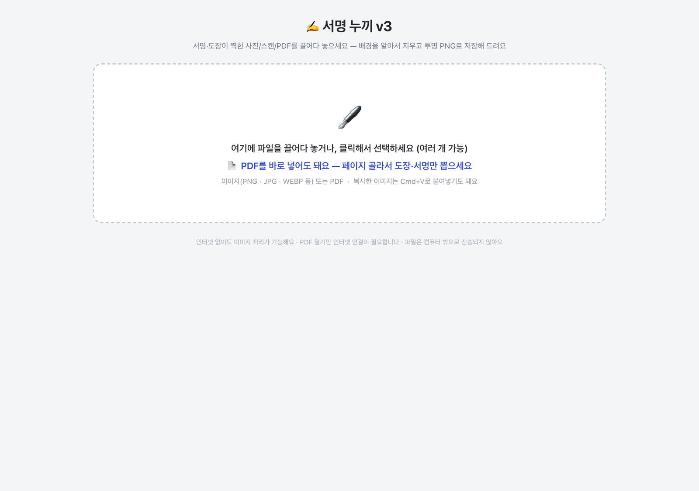
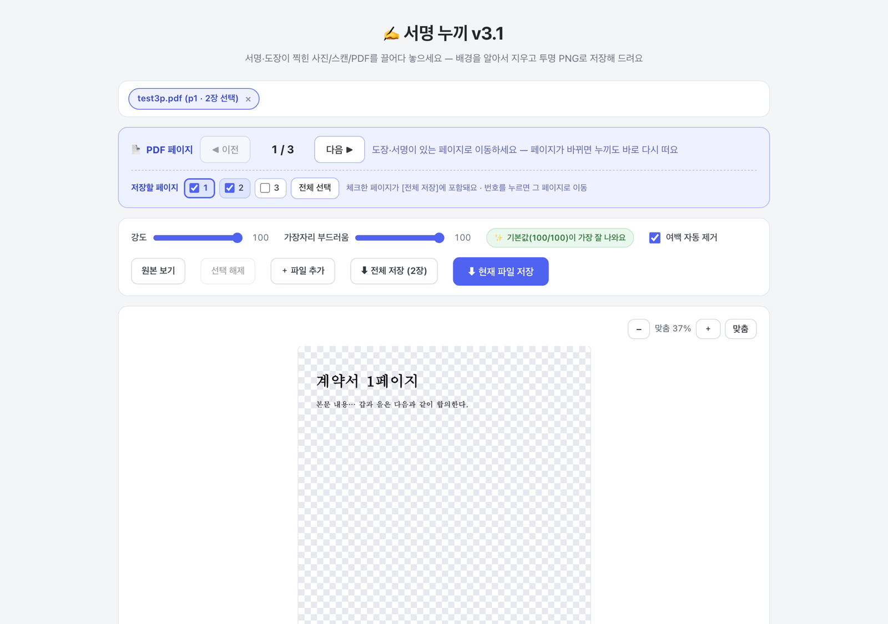
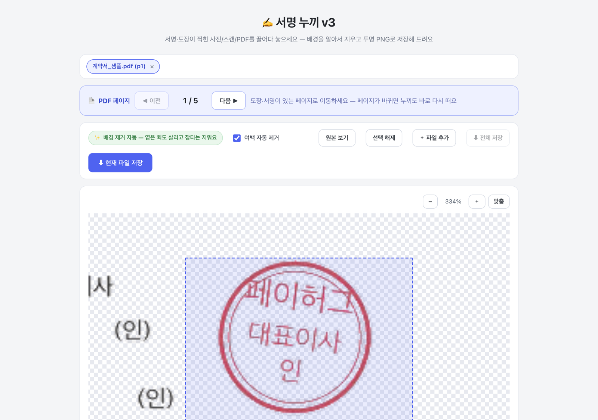
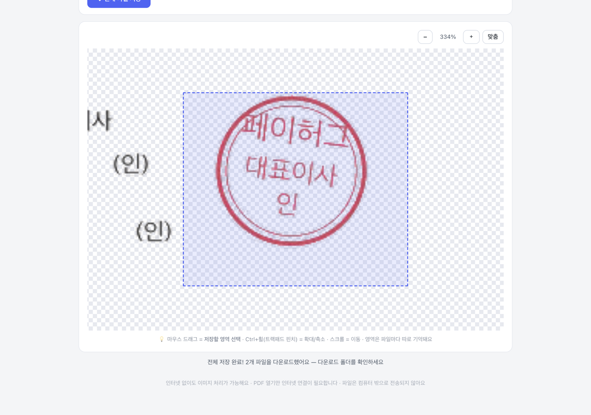
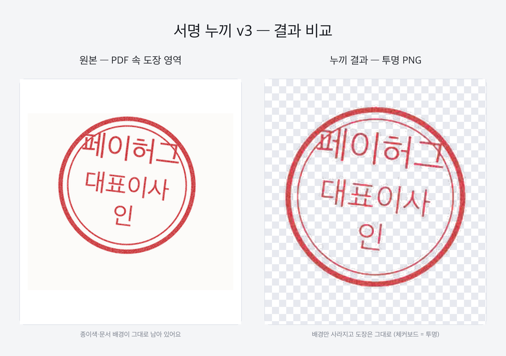

계약서에 넣을 서명·도장 이미지가 필요할 때 쓰는 도구예요. 사진이든 PDF든 그냥 넣으면
배경이 자동으로 지워집니다. 슬라이더는 기본값(둘 다 100)이 가장 잘 나오게 맞춰져
있어서 보통 만질 필요 없어요 — 넣고, (필요하면) 원하는 부분만 드래그하고, 저장하면 끝.
파일은 외부로 나가지 않아요.
1파일을 끌어다 놓으세요 — PDF도 바로 됩니다
서명·도장이 찍힌 사진, 스캔, 계약서 PDF 전부 그대로 넣으면 돼요. 여러 개 한 번에 가능하고, 복사한 이미지는 Cmd+V로 붙여넣어도 됩니다. PDF를 이미지로 미리 바꿀 필요 없어요.

2넣자마자 배경이 지워진 결과가 보입니다
체크무늬가 "투명해진 부분"이에요. PDF는 페이지 버튼(◀ ▶)으로 넘기면 그 페이지가 바로 처리되고, 페이지 번호 옆 체크박스로 저장할 페이지를 고를 수 있어요 (기본은 지금 보는 페이지 1장). 슬라이더는 기본 100/100 그대로 두면 됩니다 — 글씨가 너무 옅게 붙으면 강도를 조금 내려보세요.

3도장·서명 부분만 확대해서 드래그하세요
Ctrl+휠(트랙패드 핀치)로 부드럽게 확대되고, [+][−] 버튼은 25%씩 정확히 움직여요. 확대한 뒤 마우스로 원하는 부분을 드래그하면 그 영역만 잘라서 저장됩니다. 계약서에서 도장만 뽑을 때 이렇게 쓰세요. 드래그를 안 하면 전체가 저장돼요.

4저장 버튼을 누르면 다운로드 폴더로 들어갑니다
[전체 저장]은 체크한 페이지들 + 넣은 이미지 전부를 저장해요. 여러 장이면 크롬이 "여러 파일 다운로드를 허용할까요?" 하고 한 번 물어봐요. 허용 누르시면 끝.

파일 이름은 원본명(누끼).png로 저장돼요. 예: 계약서.pdf 3페이지 → 계약서 p3(누끼).png
5이렇게 나옵니다
배경·그림자는 사라지고 도장의 빨간색, 펜의 파란색은 그대로 유지됩니다. 어디에 얹어도 깔끔해요.

자주 물어볼 것 같은 것
Q. 인터넷이 필요한가요?
이미지는 인터넷 없이도 됩니다. PDF를 넣을 때만 인터넷이 필요해요. (파일 자체는 밖으로 안 나가요)
Q. 결과가 흐리거나 잡티가 있으면요?
기본값(100/100)이 대부분 제일 잘 나와요. 배경 얼룩이 남으면 강도를 조금 내리고, 가장자리가 딱딱해 보이면 부드러움을 올려보세요. 그래도 이상하면 그 파일을 이서준에게 보내주세요.
Q. 사진이 수십 장이면요?
한꺼번에 끌어다 놓고 [전체 저장] 한 번이면 됩니다. 파일 수 제한은 없어요.
Q. 어두운 배경이나 손이 같이 찍힌 사진도 되나요?
이 도구는 "밝은 종이 + 어두운 잉크" 전용이에요. 배경이 복잡한 사진은 잘 안 될 수 있으니, 가급적 종이만 나오게 찍어주세요.